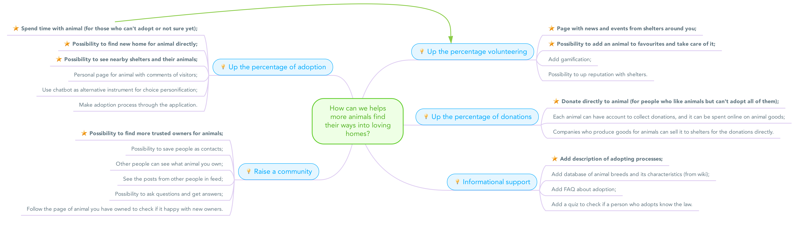
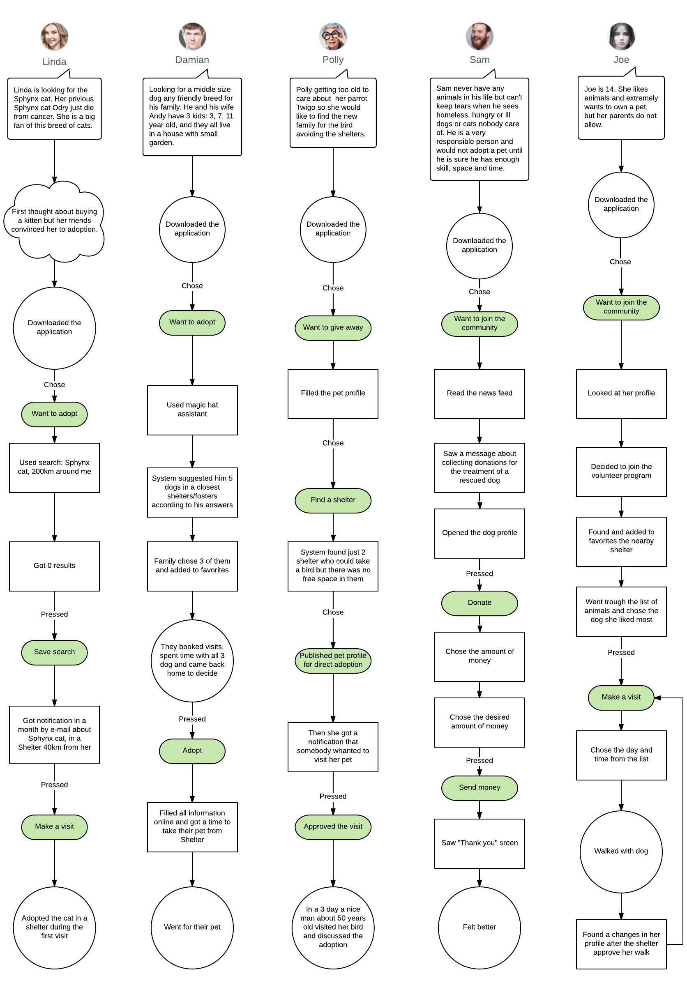

Let's rethink this situation like business system. Who will play in this game and what are their interests?
— Solve social problem;
— Satisfy other sides of the game;
— Create instrument for analysing animal loving audience;
— Make money.
This part is first which needs a deep research to understand how shelters see their problems and solutions. We can call/write them and ask, also collect some statistics and analyze the market.
💬 What is the main problem for shelter?
— Overpopulation.
💬 Is creating more places for animals solve the problem?
— No, the shelter can't keep animals forever.
💬 Why living in shelters is a problem?
— It's unhealthy for animal;
— Not enough people to care about animals;
— Not enough money to keep all animals healthy, fed, happy.
💬 How are animal shelters filling up?
— Part of adopted animals come back to the shelter;
— Breeders produce new animals and part of them also come to shelters.
💬 Why people leave their animal in a shelter?
—To much responsibilities;
—Can't care anymore;
—Move/travel.
💬 Why Shelters have the problem to give away all animals?
— A small percentage of people adopt the animal;
— Some animals come to shelters ill and need special care.
💬 What is an adoption of animal mean?
💬 Describe the adoption process.
💬 What animals usually leave in Shelters and can be adopted?
Of course, It is good to collect information from people who want to adopt, but at the same time they will adopt anyway, and people who had already adopted are not really our clients anymore. Much more interesting to interview focus group who want an animal but not adopt it.
💬 Why you buy animals from breeders?
— Don't want adult animal;
— Afraid that animal will be ill;
— Don't know where and how to adopt;
— Adoption system too complicated.
💬 Feel lonely? Like animals? Why don't you adopt?
How can we helps more animals find their ways into loving homes? After brainstorming we structurize all ideas by thematic. It is also good to mark top priority ideas for starting with minimal value product.
Two applications
It is time to check our IA with some user stories.
#
#
#
#
#
#
#

Time spent: ±11h